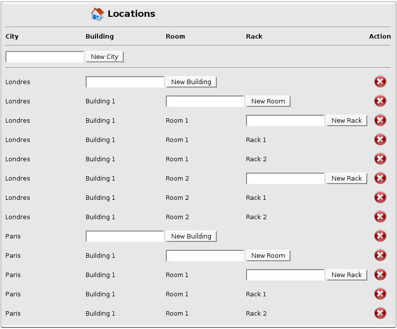
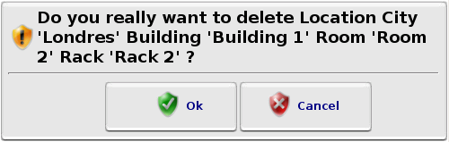

Locations
Locations
Here you can configure your Locations.
Location is the physical place of a Device. It's only used in the  Device Properties.
Device Properties.
It could be useful to create dynamic DeviceGroups categorized by their location.

Locations List
Every time you will  remove a Location, a dialog window will ask you to confirm.
remove a Location, a dialog window will ask you to confirm.

Dialog Window Confirmation